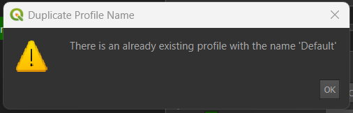
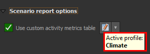

Step4: Select outputs and processing options¶
-
Step 4:
Step 4guides the user to select the outputs to be saved into the file system for report generation. By clicking on theStep 4option, the user will navigate to the section dedicated to producing outputs. Here, the user finds a list of available outputs, each representing data that can be included in the report.When the user selects an output, it signifies that the user wants it to be saved onto their file system, making it accessible beyond the current session. Conversely, leaving an option unselected means that the data will be stored as a memory layer, useful for temporary use within the current session.
This step is crucial for tailoring the outputs to include only the necessary information, thereby optimising memory usage. By choosing specific outputs to be saved, the user can generate fewer output layers which utilises system resources more efficiently.

-
Select Outputs
There are 5 options available in the select outputs.

1. NCS With Carbon: This output is initially unchecked by default. When selected, it triggers the generation of the NCS pathways output, providing insights into the pathways associated with NCS (Natural climate solution) and carbon sequestration.
2. Landuse Activity: Initially, this output is checked by default. It generates landuse activity layer outputs, providing valuable insights into various landuse activities. Users have the option to uncheck it if they do not wish to include landuse data in the report.
3. Landuse Activity Normalised: By default, this output is checked. It generates landuse project normalised outputs, providing a normalised view of landuse activities for enhanced analysis. Users have the option to uncheck it if they do not wish to include landuse normalised data in the report.
4. Landuse Activity Weighted with PWL (Priority weighted layers): By default, this output is checked. It generates landuse projects weighted outputs. Unselecting this option will disable report generation this is because the weighted output is the required output for report generation.
5. Scenario Highest Position analysis: By default, this output is checked. It generates the final highest position analysis outputs. Unselecting this option will disable report generation this is because the highest position analysis output is the required output for report generation.
-
Processing Options
NOTE: Users need to register and login with a Trends.Earth account to use the online API for processing with CPLUS.
The user can also choose the processing option, deciding whether they want to process online or offline.
- Process the scenario online: By default, this option is unchecked. When the user selects this option, the scenario is processed online using the API. This means that the system sends the scenario data to a remote server or service via the Internet. The remote server performs the necessary computations or analysis based on the provided scenario data. Processing online allows for real-time analysis and can leverage the computing power and resources available on the remote server. This option might be preferred when the user requires quicker results or when the scenario data is too large or complex to be processed efficiently on the user's local device. However, processing online may require a stable internet connection.
If the user has previously selected
Online defaults, this option will be selected automatically. -
Scenario report options: Below are the benefits of the scenario report options.
-
The Metrics Generator enables plugin users to incorporate additional metrics or calculations for each activity. It includes automated expressions that assist in calculating measures such as irrecoverable carbon, financial metrics like the net present value (NPV) of each activity, and other weighting measures such as jobs per hectare.
-
The tool leverages the full functionality of the expression builder, allowing users to create fully customised expressions based on the available project variables.
-
The Expression Builder within the Metrics Generator has been enhanced with a CPLUS library, which offers automated calculations for irrecoverable carbon, PWL measures, and NPV. These features come with helpful guidance for their use. It is also important to reference the variables list when creating custom options.
-
The Metrics Generator introduces the concept of a metric profile that represents a collection of columns grouped according to user-defined criteria. The grouping options are entirely flexible, depending on how the user wishes to organize the columns and their associated properties. The primary benefit of profiles is that they enable users to configure column groupings and easily select which profiles to apply in different scenario analysis reports.
Note: Please note that expressions can be applied on a column-by-column basis or can be cell-specific, providing full granularity for the measures and metrics associated with each activity.
-

1 Use custom activity metrics table: Users must check the checkbox to enable this option. After doing so, they need to click on the  icon to access the metrics table.
icon to access the metrics table.
Users are required to follow these steps to create a custom activity metrics table.
Step 1:

1 x: Close the wizard.
2 Help: Provides the qgis help documentation.
3 Back: Go back to the previous step (Disabled in the first step).
4 Next: Proceed to the next step.
5 Cancel: Cancel the current operation.
Step 2:

1 Profiles: Users can specify profiles for managing column groupings by selecting the current metric profile.
-
Add Profile
-
allows users to add a new profile. This opens a
Add New Profiledialog box where a user can enter the name of the profile. -
A user can enter the profile name to add it to the list of profiles and set it as the current profile.

-
If the profile name already exists, the following error message will be shown:

-
-
Rename Profile
-
allows users to rename the current profile. This opens a
Rename Profiledialog box where a user can enter the name of the profile. -
A user can enter the updated profile name.

-
If the profile name already exists, the following error message will be shown:

-
Copy Profile
-
allows users to copy the current profile. This will open a
Copy Profiledialog which allows a user to specify a new name for the copied profile. -
A user can enter the name of the copied profile to add it to the list of profiles and set it as the current profile. A
Copysuffix is, by default, appended to the name of the source profile.
-
If the profile name already exists, the following error message will be shown:
-
Delete Profile
 allows users to remove the current profile.
allows users to remove the current profile.
2 Columns: Users can add or remove columns from the table.
-
 : Allows users to add column to the table.
: Allows users to add column to the table.
- x: Close the dialog box.
- Input Field: Users are required to enter the column name in this input field.
- Cancel: Cancel the process.
-
OK: Users can complete the add column process by clicking on this button. If users click on this button without filling the column name then the process will be complete without any column being added.
-
If users fill in a column name which is already available in the table then the users will encounter the error
There is already existing column name.
-
: Allows users to remove a column from the table. Users are required to select the column which they want to remove from the table and then click on this button to remove it from the table.
-
 and
and  : Allows users to reorder the columns in the table. Select the column from the table and then click on the either any option to reorder the column.
: Allows users to reorder the columns in the table. Select the column from the table and then click on the either any option to reorder the column.

3 Properties: This contains the properties of the column.
-
Header label: The default header name is based on the selected column. Users can change it to any name they prefer, but the field must be filled in. If the
Header labelis empty then the users will encounter with the errorheader label is empty.
-
Metric: Users can select the metric from the dropdown list. User can clear the metric filed by clicking on the
xmark available inside the input field and can add their own custom metric.
-
Create Custom Metric: Users can create their own custom metric by clicking on the
ε epsilonbutton located on the right side of theMetricinput field.- This will open the
Column Expression Builderdialog box.

1 Expression: Users can access the expression tab by clicking here.
2 Input Area: User can enter the expression in this input area.
3 Operators and symbols: Users can access the operators and symbols from here.
4 Functions: Users can choose the function that their expression is related to.
5 Details Section: This section shows the details of the expression like how users can fill the expression, what are the available arguments and operators etc.
-
For Example:

1 Input Area: Contains the expression we have entered.
2 Functions: For example, we have selected the
CASEfromConditionals.3 Details Section: This section shows the details of the expression like how users can fill the expression, what are the available arguments and operators etc.
4 Preview: This section displays the feature details. In our case, we have entered the incorrect input without following the proper syntax, resulting in an error in the preview.
-
After filling all the details users are required to click on the
OKbutton to complete the process or they can click on theCancelbutton to cancel the process. -
When users click on the
Cancelbutton a popup dialog box will appear asking for confirmation to cancel the process.
-
â : Users can check this checkbox to remember their choice and avoid showing this message again in the future.
-
No: Users can click on the
Nobutton to go back to the editing the process. -
Discard changes: Users can click on this button to complete the cancel process. This will discard the changes and close the window.
-
- This will open the
4 Formatting: This contains the formatting options for the column.
-
Horizontal alignment: Users can select the horizontal alignment of the column from the dropdown list, choosing between left, center, right, or justify alignment.
-
Format as number: Users are required to check the checkbox to use this option, then users will be use the
Customise...button to customise the number format.1 Number Format: Users can use this button to go back to the previous window.
2 Category: Users can select the category of the number format from the dropdown list.
3 Format: Users can select the format of the number from the dropdown list. (This field varies depending on the selected category.)
4 Decimal places: Users can enter the number of decimal places to be displayed. (This field varies depending on the selected category.)
5 Show trailing zeros: Users can select this checkbox to display trailing zeros. (This field varies depending on the selected category.)
6 Sample: Users can see the sample of the number format selected.
Step 3:
1 Customise activity metric: Checking this checkbox allows users to customise the metric of a specific cell.
2 Customise cell metric: Double-clicking on a cell converts it into a dropdown menu. Users can then select the <Cell metrics> option from the menu, enabling them to customise the cell metric.
-
This will open the
Activity Expression Builderwindow.
Please check the Step 2 to know more about how to customise the metric.
-
If users try to proceed without defining the
<Cell-metric>then users will encounter an error message.
Step 4:
This is the last step where a user review all the columns and metrics they have defined. After clicking on the Finish button will complete the process, with the current profile set as the active profile, and redirected to the Qgis plugin Step 4 from where users can generate the report with the custom activity metrics table.

- Active Metric Profile:
A user can select the desired profile for the custom activity table in the scenario analysis report by using the dropdown menu as shown below:
Hovering over the metric builder button displays the currently active profile selected by the user.

-
Run Scenario:
After checking or unchecking the checkbox, click on the
Run Scenariobutton to execute the scenario and generate the report.
1. Progress Bar: Upon clicking this button, a pop-up window will appear, displaying a progress bar indicating the report generation status.
2. View Report Dropdown: Once the report is generated, the user can click on the
View Reportdropdown, to view the options.The following options are available there.

-
Layout designer: Opens the report in the QGIS layout designer.
-
Open PDF: Opens the created PDF.
-
Help: Takes the user to the User's documentation site.
3. Hide: This option hides the Progress Dialog Box.
4. Cancel: Click on the
Cancelbutton to terminate the report generation process. Upon clicking this button, it will transform into theClosebutton. Click on theClosebutton to dismiss the pop-up window.View Task Status Online¶
After clicking on the
Hidebutton this button will be enabled to view the task status.
Click on the
View Task Online buttonto view the task status. -
Report without custom metrics table¶
- Users can see in the report there is no custom metrics table.

Report with custom metrics table¶
- Users can see in the report that the custom metrics table is included.
Click here to explore the log section.